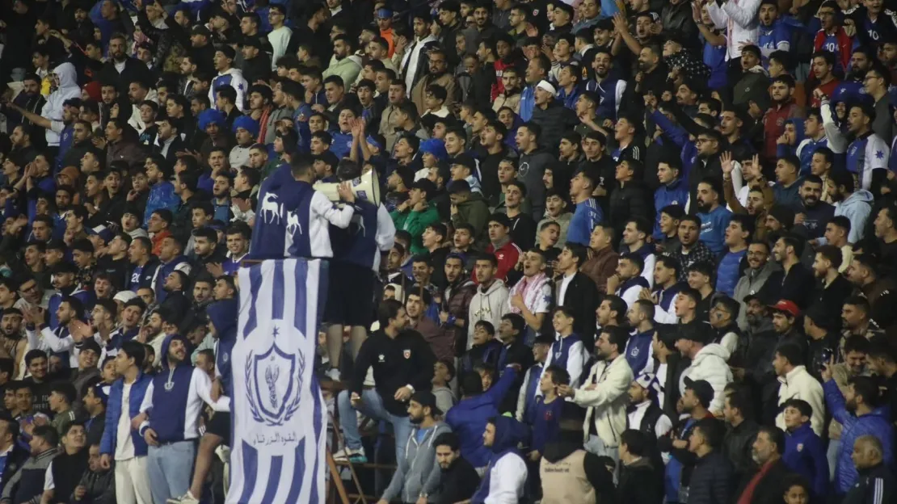

Al-Ramtha Sports Club is one of the oldest Jordanian clubs, founded in 1966. The club is based in the city of Al-Ramtha, located in the northern part of Jordan.
Stadium
Al-Ramtha Sports Club plays its home matches at the Prince Hasan Stadium, which has a capacity of around 12,000 spectators. The stadium is located in the city of Al-Ramtha and serves as the home ground for the club's football team.
Achievements
- Jordan Premier League: 5 titles (1981, 1982, 1984, 1985, 2021)
- Jordan FA Cup: 3 titles (1980, 1981, 1990)
- Jordan Super Cup: 2 titles (1981, 2021)